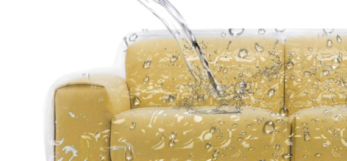
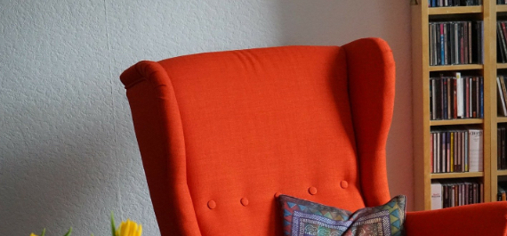
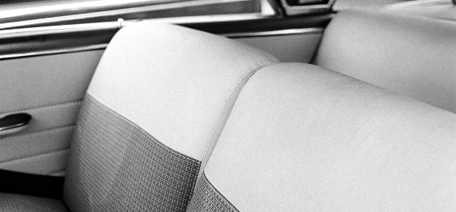
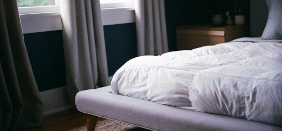
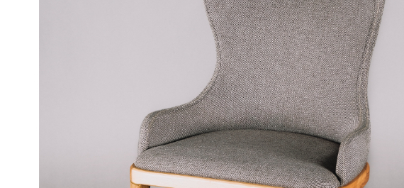

Limpeza e Higienização de Tapetes
Para a limpeza do tapete, o mesmo é recolhido na sua residência ou empresa, fazemos a lavagem, higienização e secagem em ambiente com maquinário industrial e com processo rigoroso de secagem. Trabalhamos com qualquer tamanho de tapetesLimpeza e Higienização de Sofás
A higienização de sofás e estofados é feita com o que há de mais moderno hoje em termos de produtos e equipamentos. Através da higienização é feito o controle de ácaros, bactérias e remoção de manchas e odores, deixando seu estofado limpo e com cheiro agradável. Limpamos Têxtil e Pele.

Impermeabilização
A impermeabilização é realizada para proporcionar maior resistência à respingos de água e outros líquidos, protegendo 4x mais seu estofado ou tapetes de líquidos e nódoas. Processo feito com produtos não inflamáveisHigienização de Poltronas e Puffs
Trabalhamos na limpeza completa na remoção de nódoas, eliminando ácaros e bactérias. Proporcionando uma aparência renovada.


Higienização Interior de Viaturas
Contamos também com o serviço de higienização dos bancos e teto do veículo utilizando sistema de extração.Limpeza e Higienização de Colchões e Box
A higienização elimina ácaros, bactérias e manchas. É importante realizar esta higienização de 6 em 6 meses para que seu colchão esteja sempre em condições ideais, garantindo uma higienização e reduzindo problemas de saúde.

